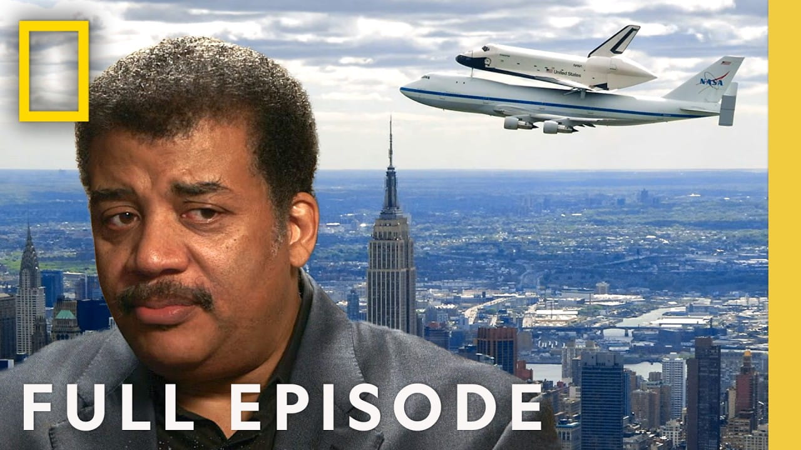

Is Interstellar Space Travel Possible? (Full Episode) | Startalk with Neil deGrasse Tyson | Nat Geo

Summary
This discussion explores the scientific, technological, and biological challenges of achieving human interstellar travel, drawing on insights from astronaut Mae Jemison, physicist Lawrence Krauss, and biomedical engineer Ronke Olabisi. It celebrates the age-old human dream to travel beyond the solar system and explains how today's space exploration -- including Mars missions and the legacy of the space shuttle program -- is just the first step on that journey.
The massive scales of interstellar distances are another aspect that is considered in this discussion. The closest star to the Earth, Alpha Centauri, is located more than four light years away from our planet, meaning that the use of chemical fuels in spacecrafts will not be enough to reach this system. Nuclear, antimatter, and laser-powered spacecrafts are discussed as alternatives.
Space exploration presents other scientific and environmental issues to consider during space missions that will last longer. The future space missions will demand closed life support systems, self-supporting ecological systems, and perhaps a crew spanning across generations. Human hibernation and tissue engineering are among the other ideas mentioned.
Ultimately, the interview discusses the philosophy behind space exploration and how it plays an important role in shaping the destiny of humanity on Earth.
Speaker /(Guest): Neil deGrasse Tyson
Also featured: Mae Jemison,Lawrence
Krauss,Ronke Olabisi
Concept of the Interview: Feasibility, challenges, and future possibilities of interstellar
space travel
Personal Opinion
Neil deGrasse Tyson has always been one of my favorite scientists, despite the fact that I have had difficulty comprehending him before due to his scientific language. Nevertheless, this being a task in English, I could concentrate more on the meaning rather than the technicalities involved. This interview was unique in the sense that it pointed to how far humans have come in terms of exploring space yet there is so much more that we cannot comprehend or explore. It left me thinking about our place in the cosmos.
Reflection
The interview allowed me to gain an expanded view on the development of humans and their place in the universe. I was able to realize that even though humans have made substantial progress when it comes to space, they have yet to reach the level where they can explore the universe through traveling between the stars. In addition, before this interview, I used to be preoccupied with the idea of scientific progress and did not pay much attention to all the difficulties we face. It also made me think about the concept of scale and time in space, both of which are extremely hard to comprehend.
Date I Watched the Interview
July 17, 2026
New Vocabulary
- Interstellar: relating to or occurring between stars.
- Propulsion: the action or process of propelling or moving something forward.
- Astronomical distance: the distance between celestial objects, typically measured in light-years or parsecs.
- Cosmic scale: The vast size and distances of the universe beyond Earth.
- Interdisciplinary: Involving multiple fields of study, such as physics, biology, and engineering working together.